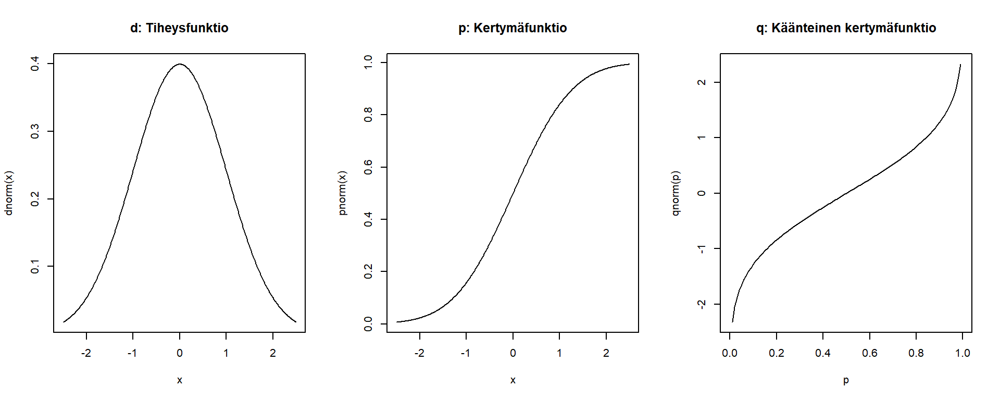

Kappale 7 Todennäköisyysjakaumat R:ssä
Monille yleisimmistä tilastollisista jakaumista eli todennäköisyysjakaumista on valmiita funktiota R:ssä. Funktioita on neljää eri tyyppiä, jotka merkitään funktion nimen ensimmäisellä kirjaimella.
- d: Tiheysfunktio: mikä on tiheysfunktion arvo pisteessä \(x\)?
- p: Kertymäfunktio: millä todennäköisyydellä jakaumasta poimittu arvo on pienempi/suurempi kuin \(q\)?
- q: Käänteinen kertymäfunktio (eli kvantiilifunktio): mille arvolle kertymäfunktio palauttaa todennäköisyyden \(p\)?
- r: satunnaislukugeneraattori: arvo eli simuloi satunnaisia havaintoja jakaumasta.
Alla ovat kuvaajat ensimmäisestä kolmesta funktiosta standardinormaalijakaumalle (pääte norm):

7.1 Esimerkki: normaalijakauma
Otetaan muutama käytännön esimerkki. Oletetaan, että suomalaisten miesten suolan saanti on normaalijakautunut odotusarvolla 10 grammaa päivässä ja keskihajonta on 4 grammaa päivässä (odotusarvo on totta, keskihajonta allekirjoittaneen hihasta). Piirretään ensin kuva jakaumasta välillä \([0, 20]\) grammaa päivässä. Jakauman muoto saadaan funktiolla dnorm, eli yllä olevan ohjeen mukaan d-alkuinen funktio antaa tiheysfunktion, ja norm-pääte viittaa normaalijakaumaan. Normaalijakauman funktiolle tulee kertoa jakauman odotusarvo (mean) ja keskihajonta (sd).
# Sequential vector of salt consumption
salt <- seq(0, 20, by = 0.1)
# Density function
density <- dnorm(salt, mean = 10, sd = 4)
# Line plot
plot(salt, density, type = "l",
xlab = "Suolan saanti", ylab = "Tiheysfunktio",
main = "Suomalaisten miesten suolan saanti")
Aikuisten saantisuositus on enintään 5 grammaa suolaa päivässä. Kuinka moni suomalainen mies syö tämän jakauman mukaan sopivasti suolaa? Vastaus saadaan kertymäfunktiosta (\(P(X \leq 5)\)) pnorm-funktion avulla.
pnorm(5, mean = 10, sd = 4)## [1] 0.1056498Tämän jakauman mukaan vain noin 11 % suomalaisista miehistä syö suolaa sopivasti!
Suomalaisten naiset syövät keskimäärin 7 grammaa suolaa päivässä. Kuinka moni mies syö tätä enemmän suolaa? pnorm antaa oletuksena arvon \(P(X \leq 7)\). Nyt halutaan kuitenkin tietää \(P(X > 7)\), joka saadaan asettamalla lower.tail = FALSE:
pnorm(7, mean = 10, sd = 4, lower.tail = FALSE)## [1] 0.7733726Noin 77 % miehistä syö suolaa keskimääräistä naista enemmän.
Entä jos halutaan tietää, kuinka paljon suolaa eniten syövä 10 % vähintään saa? Tähän voidaan vastata funktiolla qnorm, joka on jakauman käänteinen kertymäfunktio, eli funktion pnorm käänteisfunktio. Samoin kuin pnorm, qnorm-funktion oletus on, että todennäköisyydet lasketaan jakauman vasemmasta hännästä alkaen. Vastaus tähän kysymykseen selviää siis näillä kahdella tavalla:
qnorm(0.1, mean = 10, sd = 4, lower.tail = FALSE)## [1] 15.12621# OR
qnorm(0.9, mean = 10, sd = 4)## [1] 15.12621Eli tämän jakauman mukaan eniten suolaa saava 10 % miehistä syö yli kolminkertaisen määrän suolaa suositukseen verrattuna.
7.2 Muita jakaumia
Vastaavat funktiot löytyvät myös muille jakaumille, kuten:
- Khiin neliö: chisq
- Eksponentiaalinen: exp
- Studentin \(t\): t
- Tasajakauma: unif
ja niin edelleen.